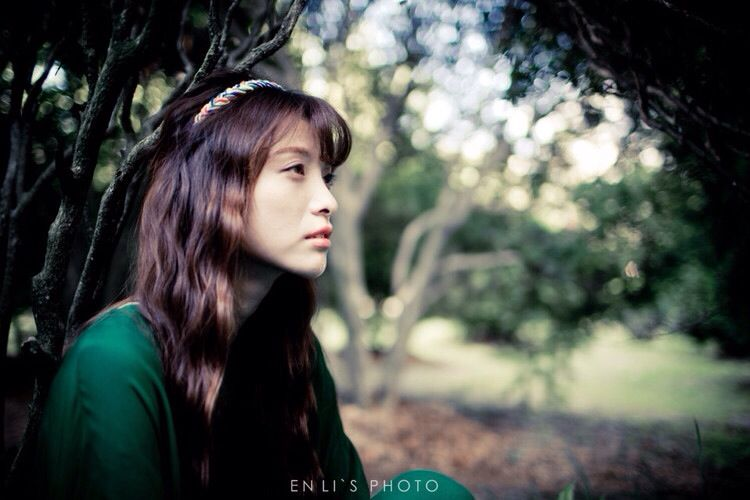
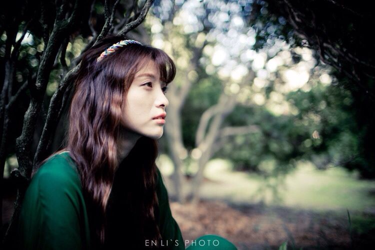

『摄影教程』10个摄影构图技巧
构图之于摄影正如剧本之于电影。如果一幅照片构图不佳，即使有良好的摄影技法和故事内容，也无法获得读者的共鸣。构图技巧的提高需要加以时日练习。本文向大家介绍一些基本的构图技巧，并附有运用这些技巧拍摄的照片以作说明。这些技巧会训练你观察画面的眼睛，这是拍摄出色照片非常重要的一点。…

构图之于摄影正如剧本之于电影。如果一幅照片构图不佳，即使有良好的摄影技法和故事内容，也无法获得读者的共鸣。构图技巧的提高需要加以时日练习。本文向大家介绍一些基本的构图技巧，并附有运用这些技巧拍摄的照片以作说明。这些技巧会训练你观察画面的眼睛，这是拍摄出色照片非常重要的一点。…

快门的多种可能性
相机中显示的B、3、2、1、1/2、1/5、1/10、1/20、1/60、1/100、1/250、1/500、1/1000、1/10000秒等数值表示的就是我们一般所说的快门，在参数中用“S”表示。
B门：用于长时间曝光，按下第一下光孔打开开始曝光，按下第二下光孔关闭，摄影师可以自己计算曝光时间。
快门最最基础的认识就是:在同等条件下（拍摄固定物体，光圈，外部环境，iso值等同样情况下）快门的速度越快拍摄出来的画面越暗。越慢，拍摄出来的画面就越亮。
但是，如果你就此认为快门只是控制画面明暗的工具，那你就大错特错了，了解快门的属性之后，摄影之门才刚刚为你打开，现在让我们来看看快门给我们带来的多种可能性吧。